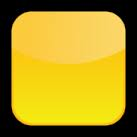
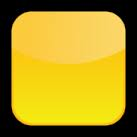

DoGet
DoGet helps you remember the things you want to get or do, using colour coding and sorting.
Items "to get" are coloured yellow, "got" items are green; unwanted items are white.
How to use it
- If necessary, tap the "Clear" (brush) icon to reset all items to white.
- Tap a wanted item to turn it yellow. Repeat for other wanted items.
- Tap the "Sort" icon
- the yellow wanted items will appear above the white unwanted items.
- When you've got an item, tap that row to change it from yellow to green, and tap "Sort" - the yellow items appear first, then green, then white.
1. 2. 3.
Editing
You can change any item caption: tap the "Edit" icon ,
then tap the item to be changed.
Tap to turn all items yellow.
Tap to turn all items white.
Tap to add a new item.
Tap to hide items from the list.
Tap to restore hidden items to the list.
(Tap to close this help page)